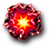

Letové karty
 V levém horním rohu letového displeje je umístěn balíček letových karet. kliknutím na balíček zobrazíš další letovou kartu.
V levém horním rohu letového displeje je umístěn balíček letových karet. kliknutím na balíček zobrazíš další letovou kartu.
Jednotlivé karty jsou popsány níže:
Volný vesmír
Volný vesmír je jako široká rovná závodní dráha. Jak rychle dokážeš letět?
Potenciální síla motorů každé lodi je zobrazena na displeji. U lodí s dvojitými motory se zobrazí možný rozsah hodnot, protože se hráč může rozhodnout zaplatit baterie  a tím sílu motorů zvýšit.
a tím sílu motorů zvýšit.
Hráči si volí sílu motorů podle pořadí v letu, takže když na tebe přijde řada, už znáš sílu motorů hráčů letících před tebou. Dvojitý motor aktivuješ kliknutím na baterii nebo přetažením baterie na dvojitý motor. Nakonec potvrď výslednou sílu motorů kliknutím na ikonu  .
.
Nezáleží na tom, který dvojitý motor si vybereš. Všechny fungují stejně. Naproti tomu může být důležité, jakou použiješ baterii. Některé dílky s bateriemi jsou zranitelnější než jiné. Proto se snaž nejdříve využít ty, kterým hrozí největší riziko upadnutí od lodi.
Poté, co všichni určí svou sílu motorů, pohnou se všechny lodě kupředu o daný počet letových dní.
I když je ti jedno, jak rychle poletíte, v každém případě potřebuješ alespoň jeden motor. Loď, která má ve Volném vesmíru sílu motorů 0, musí odstoupit z letu.
Planety

Když budeš mít štěstí, narazíš na kartu s dvěma až čtyřmi planetami, kde můžeš přistát a naložit nějaké zboží. První se rozhoduje vedoucí hráč, další následují podle pořadí letu.
Pokud se nemůžeš rozhodnout, na které planetě přistát, můžeš zkontrolovat volné místo ve svých přepravních kontejnerech. Detailní náhled lodi zobrazíš kliknutím na svůj avatar.
klikni na planetu, na které chceš přistát a poté na ikonu  pro potvrzení. Přistání na planetě tě bude stát počet letových dní vyznačených v pravém dolním rohu karty. Jestliže na žádné planetě přistát nechceš, prostě klikni na ikonu
pro potvrzení. Přistání na planetě tě bude stát počet letových dní vyznačených v pravém dolním rohu karty. Jestliže na žádné planetě přistát nechceš, prostě klikni na ikonu  .
.
Nikdo tě nenutí přistávat. Dokonce se může stát, že hráči letící vpředu zaberou všechna volná místa a na někoho planeta ani nezbyde. Je povoleno přistát na planetě jen proto, abys tím ostatním sebral šanci na přistání. Nemusíš přitom nakládat žádné zboží. (Ale je otázka, jestli to stojí za ty ztracené letové dny.)
Hráči, kteří se rozhodnout přistát, naloží zobrazené zboží kliknutím na něj nebo přetažením kostiček do svých přepravních kontejnerů. Přitom můžeš zboží přeskládávat a případně měnit zboží s nižší hodnotou za lepší. Poté, co všichni hráči naloží zboží, ztratí ti, kteří přistávali, příslušný počet letových dnů.

Opuštěná loď

Objevit ve vesmíru nějakou opuštěnou loď je výhra pro celou posádku. Sice existuje určitý předpis, podle kterého by se podobné nálezy měly hlásit, ale čert to vem! V každé posádce se najde několik lidí, kteří už mají kapitána po krk a tajně šetří na svou vlastní loď. Není nic jednoduššího, než opuštěnou loď opravit a za patřičný obnos jim ji přenechat.
Opuštěnou loď může obsadit pouze jeden hráč. Pokud ji nezabere nikdo z hráčů letících před tebou, můžeš k ní vyslat posádku kliknutím na jednotlivé astronauty (nebo mimozemšťany). Ti pak se svou novou lodí odletí a už je nikdy neuvidíš. Za to získáš počet kreditů uvedený na kartě a ztratíš vyznačený počet letových dnů.
Jestliže nechceš o posádku přijít, klikni na ikonu  . Příležitost obsadit loď dostanou hráči za tebou. Pokud nemáš dost posádky, kterou bys mohl vyslat, přeskočí tě hra automaticky.
. Příležitost obsadit loď dostanou hráči za tebou. Pokud nemáš dost posádky, kterou bys mohl vyslat, přeskočí tě hra automaticky.

Opuštěná stanice

Tuhle stanici určitě postihla nějaká tragická událost. Co když za sebou její obyvatelé zanechali nějakou dobrou kořist, když museli ve spěchu uprchnout? Pátrací akce ale bude vyžadovat velkou průzkumnou skupinu. Abys mohl opuštěnou stanici prozkoumat, musíš mít alespoň tolik členů posádky, kolik vyžaduje karta.
Opuštěnou stanici může prozkoumat jen jeden hráč. Pokud toho nevyužije nikdo z hráčů letících před tebou, můžeš kliknutím na ikonu  vyzvednout kořist ze stanice. Ehm, pátrat po přeživších. Samozřejmě. Jde přece o humanitární misi. Získáš zboží zobrazené na kartě a ztratíš příslušný počet letových dnů.
vyzvednout kořist ze stanice. Ehm, pátrat po přeživších. Samozřejmě. Jde přece o humanitární misi. Získáš zboží zobrazené na kartě a ztratíš příslušný počet letových dnů.
Při průzkumu opuštěné stanice posádku neztrácíš. Na rozdíl od Opuštěné lodi se posádka po vyrabování stanice vrátí zpět. Um, tedy... po prohledání.
Pokud opuštěnou stanici nechceš prozkoumávat, klikni na ikonu  . Příležitost dostanou hráči letící za tebou. Jestliže nemáš dostatek posádky nutné pro prozkoumání stanice, hra tě přeskočí automaticky.
. Příležitost dostanou hráči letící za tebou. Jestliže nemáš dostatek posádky nutné pro prozkoumání stanice, hra tě přeskočí automaticky.
Meteorický roj

Takový meteorický roj ti může pěkně zavařit. Karta zobrazuje několik velkých a/nebo malých meteorů a směry, ze kterých přilétají. Meteory se vyhodnocují jeden po druhém a ohružují najednou všechny hráče.
Za každý meteor se hodí dvěma kostkami. Výsledkem hodu je řádek nebo sloupec, kudy meteor letí. Následky střetnutí s meteory můžeš vidět vedle avatarů jednotlivých hráčů a také přímo na plánu letu. Některé meteory se vyhodnotí automaticky. Jiné mohou vyžadovat rozhodnutí. Meteory se chovají podle následujících pravidel:
Malý meteor
Malý meteor se od dobře postavené lodi jen neškodně odrazí. Problém nastává, jen pokud zasáhne otevřenou přípojku. V tom případě ale stále můžeš zabránit poškození lodi použitím štítu, pokud máš nějaký, který je nastavený správným směrem. Za použití štítu platíš jednu baterii  . Pokud se meteoru nechceš nebo nemůžeš bránit, zasažený dílek je zničen.
. Pokud se meteoru nechceš nebo nemůžeš bránit, zasažený dílek je zničen.
Velký meteor
Velký meteor je samosebou mnohem nebezpečnější. Jeho náraz poškodí i správně postavenou loď a nezachrání tě ani štíty. Tvou jedinou nadějí tak je rozstřílet ho děly.
Pokud meteor přilétá zepředu, musí být dělo umístěné ve stejném sloupci jako meteor.
Meteor přilétající ze strany lze sestřelit dělem umístěném ve stejné řadě a v obou sousedních řadách.
Meteor přilétající zezadu lze sestřelit dělem umístěném ve stejném sloupci a v obou sousedních sloupcích.
Hra automaticky sestřelí velký meteor, který může být zasažen jednoduchým dělem. Pokud můžeš meteor zasáhnout jen dvojitým dělem, máš možnost kliknutím na bateriiVelké meteory přilétají většinou zepředu, což je dobrý důvod pro to, abys celé čelo lodi obsadil děly.
Velké meteory mohou ale občas přiletět i ze strany nebo zezadu. Proto by sis během stavby lodi měl vždy prohlédnout prognózu letu.
Dělo mířící do strany chrání vždy 3 řady – kromě své vlastní i obě sousední. Je tedy možné zabezpečit celý bok lodi za použití pouze dvou nebo tří děl.
A pokud už nemůžeš ochránit každý řádek a sloupec, je nejvýhodnější pokrýt děly alespoň řádky a sloupce s čísly 6, 7 a 8. Tato čísla totiž s nejvyšší pravděpodobností padnou na kostkách.

Nepřátelé (Pašeráci, Otrokáři a Piráti)
Nepřátelé sice představují hrozbu pro všechny, ale na lodě útočí popořadě. Nejdřív zaútočí na vedoucího hráče. Pokud nejsou poraženi, zaútočí na dalšího hráče v řadě a tak dále, dokud buď nezaútočí na všechny, nebo dokud je někdo neporazí.
Sílu nepřátel udává číslo vedle symbolu děla. Například tito pašeráci mají sílu 4. Abys nepřátele porazil, musí být síla tvých děl vyšší než toto číslo. Jestliže je síla tvých děl nižší, nepřátelé tě porazí.
Síla děl se často počítá automaticky. Pokud můžeš vyhrát nebo remizovat jen za použití dvojitých děl, máš možnost zaplatit baterie  a děla tím aktivovat.
a děla tím aktivovat.
Horní polovina karty ukazuje, co se stane, když tě nepřátelé porazí. Například pokud prohraješ s těmito pašeráky, ukradnou vám 2 zboží. Otrokáři odvedou několik členů tvé posádky. A piráti po tobě budou střílet. Poté, co tě porazí, se nepřátelé přesunou k dalšímu hráči podle pořadí letu.
Pokud s nepřáteli remizuješ, nic ti neudělají, ale i tentokrát se přesunou k dalšímu hráči podle pořadí letu.
Spodní polovina karty ukazuje, co se stane, když vyhraješ. Někdy můžeš za rozprášení party ničemů získat peněžitou odměnu. Pokud porazíš pašeráky, získáš zobrazené zboží. A jako obvykle, když získáš odměnu, ztratíš daný počet letových dnů. Jestliže odměnu nechceš, můžete kliknout na ikonu  a letové dny neztratíš.
a letové dny neztratíš.
Jakmile někdo nepřátele porazí, odletí pryč. Na další hráče už neútočí.
Je-li tvoje loď vybavená dostatkem děl, snaž se letět co nejvíc vepředu, abys za nepřátele mohl shrábnout odměnu. Naopak pokud máš děl málo, je dobré ukrýt se za lépe vyzbrojenou lodí.
Bojová zóna

Proletět bojovou zónou je pro každého dobrodruha ta pravá výzva. Hodnotí se vždy tři aspekty vybavení lodí. Hráč s nejméně vybavením se musí podrobit postihu. Pokud je nejslabších více hráčů, penalizován je ten z nich, který letí nejvíce vepředu. Tohle je tedy jedna ze situací, kdy se vyplatí být vzadu.
Ukažme si to na příkladu. Bojová zóna se vyhodnocuje následovně:
- Hráč s nejméně členy posádky ztrácí 3 letové dny.
- V pořadí letu se hráči rozdodují, zda zaplatí baterie
 za dvojité motory. Hráč s nejnižší silou motorů ztrácí 2 členy posádky.
za dvojité motory. Hráč s nejnižší silou motorů ztrácí 2 členy posádky. - V pořadí letu se hráči rozhodují, zda zaplatí baterie za dvojitá děla. Hráč s nejnižší silou děl je vystaven nepřátelské palbě zezadu.
Všechny bojové zóny mají tatáž tři kritéria, liší se pouze v jejich pořadí. Kromě výše uvedených postihů tě mohou některé bojové zóny připravit i o zboží.
Střely
Nepřátelské střely dokáží posádkám pěkně zatopit. Zásahy střelou fungují obdobně jako zásahy meteorem, s tím rozdílem, že se proti nim hůře brání. Každá střela přichází z určitého směru. Hod dvěma kostkami určí, na kterou řadu nebo sloupec střela míří.
Malá střela
Jedinou obranou proti malým střelám jsou správně nasměrované štíty. Štít můžeš aktivovat zaplacením jedné baterie  . Pokud střelu neodvrátíš, zasažený dílek je zničen.
. Pokud střelu neodvrátíš, zasažený dílek je zničen.
Velká střela
Proti velkým střelám ti nepomůže vůbec nic. Můžeš jen doufat, že střela tvou loď úplně mine. Zasažený dílek je samozřejmě zničen.

Hvězdný prach
Jen těžko si představíš něco otravnějšího, než je hvězdný prach. Dostane se ti úplně všude a už se ho nezbavíš. Všichni hráči ztrácejí 1 letový den za každou otevřenou přípojku. (Každá přípojka se počítá pouze jednou. Nezáleží na tom, jestli je přípojka jednoduchá, dvojitá, nebo univerzální.)
Epidemie

Vždyť víš, jak to chodí. Někdo z astronautů zakašle a najednou je půlka posádky po smrti. Když se na lodi rozšíří epidemie, ztrácíš 1 člena posádky (lidi i mimozemšťany) z každé obsazené kabiny, která těsně sousedí s jinou obsazenou kabinou.
Jako prevenci epidemie se vyplatí postavit loď tak, aby spolu žádné dvě kabiny nesousedily. A když už máš kabiny propojené, můžeš se alespoň pokusit jednu z nich vyprázdnit ještě před tím, než epidemie udeří. Určitě se tedy během stavby lodi nezapomeň podívat na karty letu, jestli se náhodou nějaká epidemie nechystá.
Právě jsme dostali zprávu, že nakažení členové tvé posádky nezemřeli. Podle vyjádření Společnosti s.r.o. byli vyslání domů v záchranných kapslích a úspěšně se zotavují. I tak by sis asi pro jistotu měl umýt ruce...
Sabotáž

Jen oči na stopkách a bedlivé pozorování ti pomohou odhalit nepozorovaně se blížícího sabotéra. Čím víc očí, tím lépe. Za oběť mu totiž padne loď s nejmenším množstvím posádky. Pokud má nejméně posádky více lodí zároveň, sabotáži bude vystavena ta z nich, která letí více vpředu. (Můžeš si všimnout, že toto už je několikátá situace, kdy se vyplatí držet se zpátky.)
Dva hody dvěma kostkami určí řádek a sloupec útoku. Pokud výsledná souřadnice není součástí lodi, hází se znovu. Když se sabotér netrefí během tří pokusů, svůj útok vzdá. V případě úspěšného útoku je dotyčný dílek zničen.